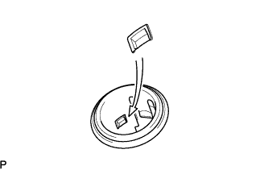
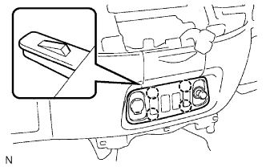

Ổ CẮM ĐIỆN > LẮP |
| 1. LẮP Ổ CẮM ĐIỆN BÊN NGOÀI |
|  |
Gióng thẳng vấu tai của đui đèn với rãnh trên nắp. Sau đó ấn đui đèn vào nắp.
| 2. LẮP ĐẾ LỖ CÔNG TẮC NO.1 |
|  |
Nối tất cả các giắc nối.
Cài khớp 4 vấu để lắp đế bắt lỗ công tắc.
| 3. NỐI CÁP VÀO CỰC ÂM ẮC QUY |
| 4. TIẾN HÀNH THIẾT LẬP BAN ĐẦU |
Tiến hành thiết lập ban đầu (Xem trang Kích chuột vào đây).